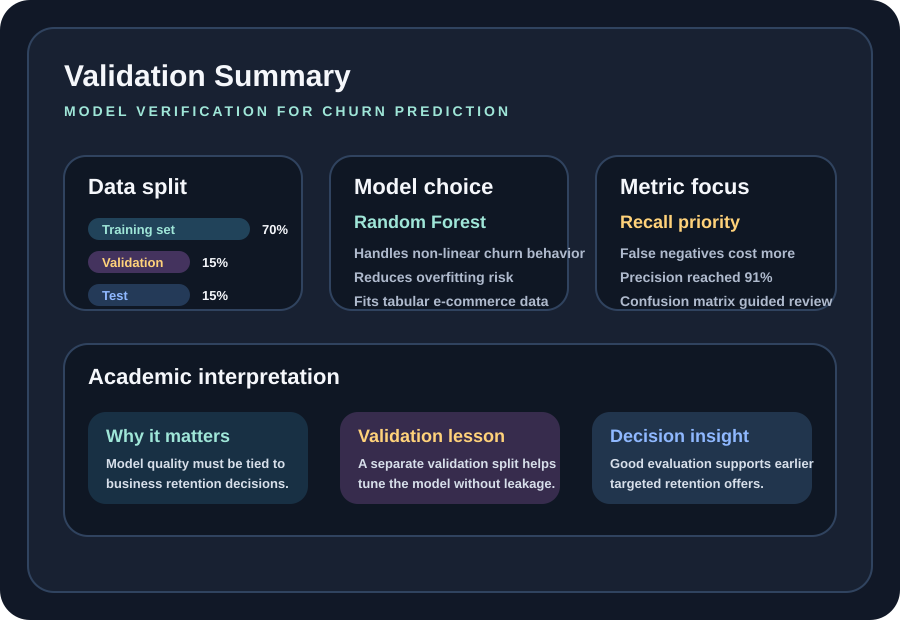
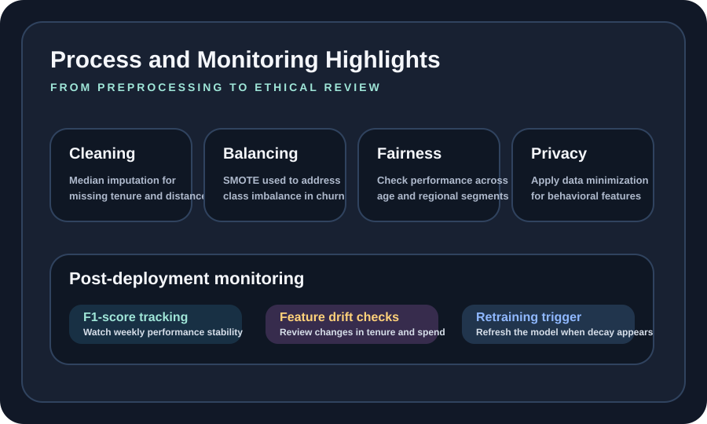

Artifact Information
Introduction
This artifact is based on my Assignment 5.3 reflective report for AIML-500 and focuses on model validation and verification in an e-commerce customer churn prediction scenario.
The project centers on identifying customers at risk of leaving so that retention actions can be taken early, while also making sure the model is evaluated with the right split strategy, ethical awareness, and post-deployment monitoring plan.
Description
The report documents how I prepared the dataset, selected a Random Forest Classifier, and validated the model using a 70/15/15 train, validation, and test split.
It also explains why churn prediction should be evaluated beyond accuracy alone by prioritizing recall, confusion matrix interpretation, fairness concerns, and model-drift monitoring after deployment.
This AI-generated visual shows the business meaning behind model evaluation by focusing on analysts, at-risk customers, and timely retention actions in an e-commerce setting.

This infographic adds the academic summary view by condensing the validation design, model choice, and evaluation priorities into a compact reference graphic.
Objective
- Validate an e-commerce churn prediction model with a reliable data split strategy
- Evaluate model quality using precision, recall, and confusion-matrix thinking
- Reflect on fairness, privacy, and post-deployment monitoring requirements
Process
- Cleaned the dataset by imputing missing tenure and warehouse-to-home distance values with median-based filling
- Managed severe yearly spending outliers by capping extreme values near the 99th percentile
- Handled class imbalance with SMOTE so the model would not default to predicting no churn too often
- Selected a Random Forest Classifier because it handles non-linear relationships and reduces overfitting risk compared with a single decision tree
- Used a 70/15/15 training, validation, and test split to tune the model without leaking information from the final test set
- Planned post-deployment monitoring through F1-score tracking, feature-drift checks, and retraining when customer behavior changes

This supporting infographic highlights the academic process flow from data preparation to ethical review and post-deployment monitoring without turning the page into a dense technical diagram.
Tools and Technologies Used
Value Proposition
This artifact demonstrates that effective machine learning work is not only about building a predictive model, but also about proving that the model is valid, useful, fair, and maintainable over time.
Unique Value: Connects technical validation with ethical reflection and deployment readiness.
Relevance: Useful for analytics and AI roles where model performance must align with business outcomes and responsible data practices.
Reflection
This artifact strengthened my understanding that a strong machine learning project depends on disciplined validation, careful metric selection, and continuous review after deployment. It also reinforced that fairness, privacy, and business cost should shape how model success is defined.
References
AssemblyAI. (2022). How to evaluate ML models / evaluation metrics for machine learning; Galaxy Inferno Codes. (2022). Validation data: How it works and why you need it; Misra Turp. (2023). Why do we split data into train test and validation sets?; NStatum. (2022). Underfitting and overfitting explained; Underfitted. (2022). The confusion matrix in machine learning.